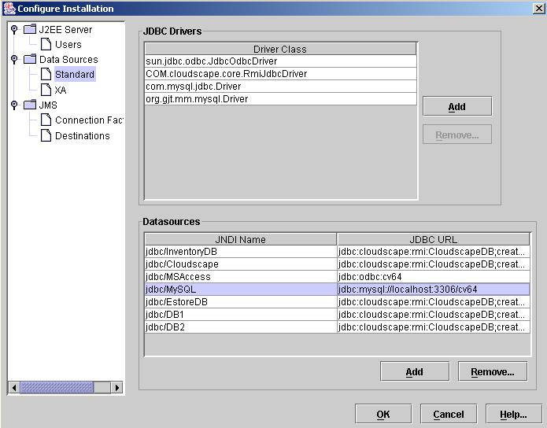

J2EE Starter
There are several files that are viewable online at this site or
download the zip file. The following is an example of how to get
an
basic J2EE web application working with the MySQL database or MS Access:
1) Download and install
the latest version of Java 2
Standard Edition and Java 2
Enterprise
Edition, remember these are two separate programs.
2) Download Apache Ant from http://ant.apache.org
3) Download MySQL database and ConnectorJ from http://mysql.com
4) Set environment variables as follows:
Linux
Environment Variables
- export
JAVA_HOME=/j2sdk...
- export
J2EE_HOME=/j2sdkee...
- export
APACHE_HOME=/apache
- export
PATH=$PATH:$JAVA_HOME/bin:$J2EE_HOME/bin:$APACHE_HOME/bin
Windows
Environment Variables
- set
JAVA_HOME=c:\j2sdk...
- set
J2EE_HOME=c:\j2sdkee...
- set
APACHE_HOME=c:\apache
- set
PATH=%PATH%;%JAVA_HOME%\bin;%J2EE_HOME%\bin;%APACHE_HOME%\bin
5) Copy
the connectorJ jar
file, e.g. mysql-connector-java-3.0.9-stable-bin.jar
file to
J2EE_HOME/lib directory.
6) Create a J2EE_HOME/products
directory.
7) Copy all the files in the cv64 directory or the zip file to
J2EE_HOME/products directory.
8) The directory structure
looks like the following:
- databases:
These are actual databases and configurations for this project, e.g.
MySQL and MS Access.
- docs:
Project documentation
- ee:
Enterprise Archives
- META-INF:
Project Metadata
- WEB-INF:
Project source, libraries, classes and build files
- ejb:
Enterprise JavaBeans (EJB)
- images:
Images
- jsp:
Java Server Pages (JSP)
Note:
There is a cv64.jpx JBuilder file located in the ejb directory.
You can download a very impressive IDE from Borland for only $10 at http://borland.com
9) Start the J2EE engine: j2ee
-verbose
10) Start the deployment tool: deploytool
11) Once the deployment tool is up you will need to edit the
Server Configurations:
- Click on Tools >Server Configuration >
- This will
bring Server Configuration screen, click on the Data Source Standard
file.
- Set up
MySQL and MS Access as they appear in the following image:

12) Open the ear file in the deployment tool and deploy the
application. Watch the sparks fly and when the application has
been deployed you can test your work at: http://127.0.0.1:8000/database/index.jsp
Windows
System
Data Source Name (DSN) Setup
The following is an
example of
how to set up the System Data Source Name (DSN). Once DSN is
configured application software can connect and perform transactions on
the database, e.g. Java.
The first step is to go to
the Administrator Tools screen as illustrated below:
Double click on Data
Sources (ODBC) and click on the System DSN tab and the following screen
will appear.
Click Add and the
following screen will appear.
Select Microsoft Access
Driver (*.mdb) and press Finish, the following screen will appear.
Click Select to
find your
database.
Click ok and the Setup
screen will reappear with your settings. If there are passwords
or other configurations you will have to click on Advanced...
Enter the Data Source Name
and press OK, the following screen will appear.
The System DSN is
now configured.